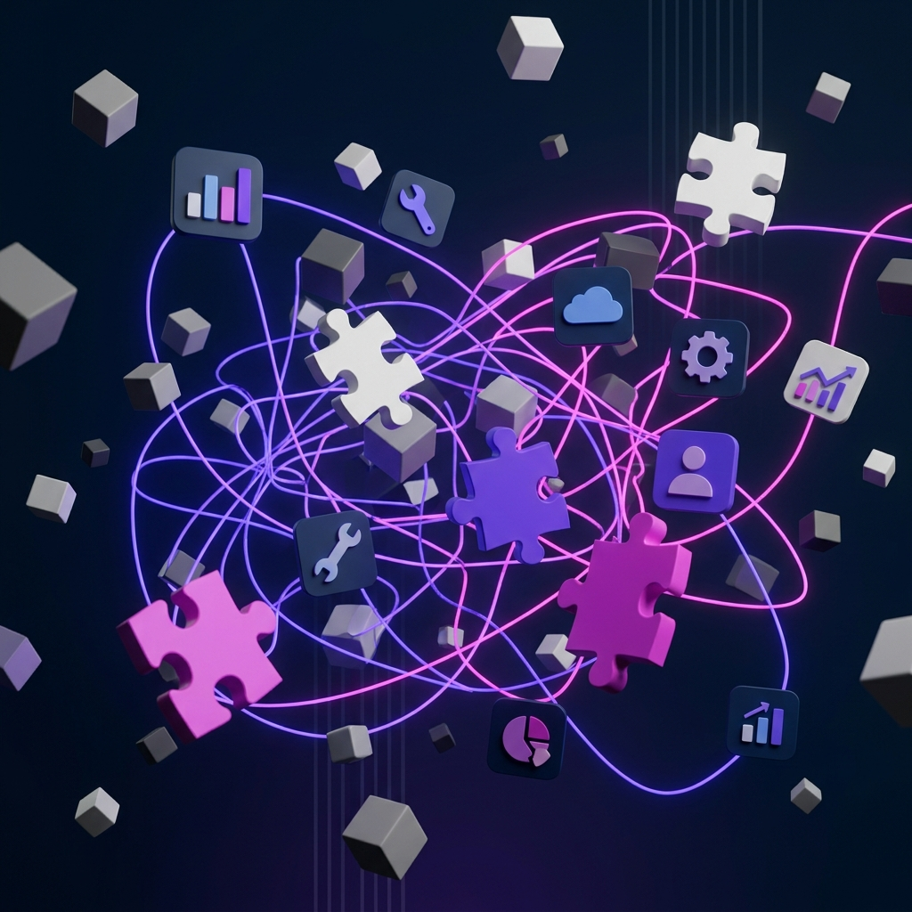

Fai un censimento rapido: quanti software SaaS sta pagando la tua azienda in questo momento? Se la risposta è "non lo so con certezza", hai appena confermato il problema. Le PMI B2B italiane tra i 50 e i 200 dipendenti utilizzano mediamente tra i 12 e i 25 tool digitali — e nella stragrande maggioranza dei casi, meno della metà sono effettivamente integrati tra loro.
L'anatomia dello sprawl
Lo sprawl tecnologico non nasce per incompetenza. Nasce per buone intenzioni mal coordinate. Il reparto marketing adotta HubSpot. Le vendite usano Salesforce. L'operations lavora su Monday.com. L'amministrazione è rimasta fedelmente su Excel. Il fondatore ha scoperto Notion un weekend piovoso e ora pretende che tutti documentino lì.
Risultato? Cinque mondi paralleli che non comunicano tra loro. L'informazione esiste, ma è frammentata in silos che nessuno ha il potere o il mandato di unificare.
I costi reali (che nessuno calcola)
- Licenze duplicate: Il 40% delle aziende paga per tool che fanno la stessa cosa in reparti diversi. CRM + gestionale + foglio Google = tre fonti di verità diverse per lo stesso cliente.
- Tempo di re-entry: Ogni volta che un dato deve passare da un sistema all'altro, qualcuno lo copia-incolla manualmente. In media, 11 ore settimanali per reparto vengono bruciate in attività di "traduzione" tra piattaforme.
- Errore umano sistematico: Il copia-incolla è il padre di tutti gli errori operativi. Un prezzo sbagliato trascritto dal CRM alla fattura può costare centinaia di migliaia di euro su un contratto B2B pluriennale.
- Impossibilità di reporting: Se i dati vivono in 12 silos, creare un report consolidato richiede giorni di lavoro manuale. La paralisi da KPI che abbiamo analizzato nasce spesso proprio qui.
"Non serve il software migliore del mondo. Serve il software giusto che parla con gli altri due software giusti. Tre piattaforme integrate battono dodici piattaforme isolate, sempre."
Il principio dei "3 pilastri tecnologici"
In Sintelops applichiamo un framework drastico: ogni azienda B2B strutturata ha bisogno di massimo tre piattaforme portanti, più qualche tool satellite. Non di più.
I tre pilastri
- Pilastro 1 — CRM/Vendita: Dove vive il cliente. Dalla prima interazione commerciale alla firma del contratto. Un'unica fonte di verità relazionale (Salesforce, HubSpot, Pipedrive — dipende dalla complessità).
- Pilastro 2 — Operations/Delivery: Dove vive il lavoro. Dalla commessa al deliverable. Il board operativo dove il team esegue, traccia avanzamenti e segnala blocchi (Jira, Asana, Monday — dipende dal settore).
- Pilastro 3 — Finance/ERP: Dove vive il denaro. Fatturazione, marginalità progetto, cash flow. Il sistema meno "sexy" ma il più critico per la sopravvivenza (Odoo, SAP Business One, Fatture in Cloud — dipende dal volume).
Il punto non è quale software scegliere — è come farli parlare tra loro in automatico. L'handoff tra Pilastro 1 e Pilastro 2 (il passaggio dal "venduto" al "da produrre") è esattamente la frizione che analizziamo nel nostro insight sull'allineamento Sales-Delivery.
L'audit tecnologico: sfoltire prima di costruire
Prima di aggiungere qualunque strumento, il primo passo è eliminare. Nella nostra fase di Diagnosi Operativa mappiamo ogni tool attivo, chi lo usa realmente (non chi ha la licenza), quale dato produce e dove finisce quel dato.
Il risultato? Un piano di razionalizzazione che in media riduce del 40% i costi di licenza SaaS e del 60% il tempo di re-entry manuale. Non perché tagliamo tool utili — perché eliminiamo quelli che nessuno usa o che duplicano funzionalità già coperte.
L'integrazione come infrastruttura, non come progetto
La differenza tra un'azienda che "ha i tool" e un'azienda che "ha un ecosistema" sta tutta nell'automazione dei flussi inter-piattaforma. Quando un deal viene chiuso nel CRM, il progetto deve nascere automaticamente nel board operativo. Quando il progetto viene consegnato, la fattura deve generarsi automaticamente nell'ERP.
Zero email. Zero copia-incolla. Zero "scusa, non l'avevo visto". Come abbiamo documentato nel nostro insight sul rumore informativo, l'email come strumento di coordinamento è un relitto. L'automazione inter-piattaforma è l'unica soluzione scalabile.